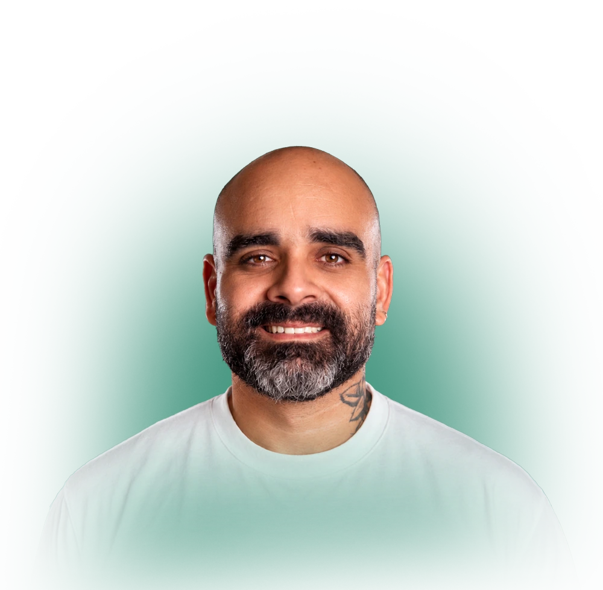
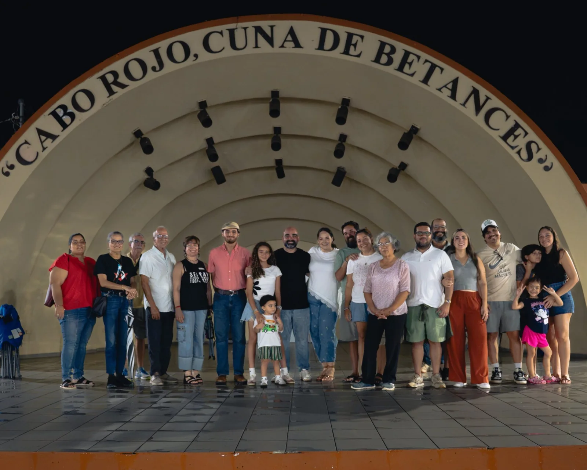
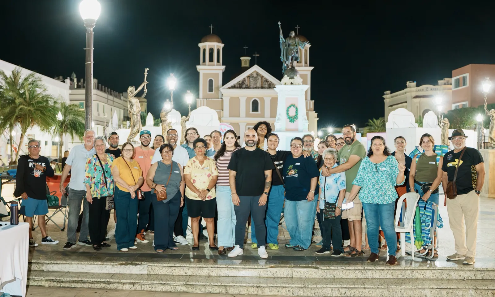

GABO RAMOS
ARRIBA LOS
DE ABAJO
Hablando con la gente
Una gira para encontrarnos, escuchar y documentar las historias, las inquietudes y las ideas que surgen de nuestras comunidades.

LA GIRA
SOBRE LA
GIRA
Arriba los de Abajo es una gira para visitar comunidades, sentarnos a conversar y escuchar lo que la gente tiene que decir: sus historias, sus preocupaciones y sus ideas.
PRÓXIMAS FECHAS
ENCUENTROS
ARRIBA LOS DE ABAJO
HABLANDO CON LA GENTE
HABLANDO CON LA GENTE
Fecha, hora, lugar y detalles de participación de cada encuentro.
CABO ROJO
9 DE OCTUBRE · 6:00 PM
Plaza de Recreo Ramón Emeterio Betances
*Trae tu silla.
MAYAGÜEZ
13 DE NOVIEMBRE · 6:00 PM
Plaza Cristóbal Colón
*Trae tu silla.
SAN GERMÁN
10 DE DICIEMBRE · 6:00 PM
Plaza Francisco Mariano Quiñones
*Trae tu silla.
MÁS FECHAS
POR ANUNCIAR
POR ANUNCIAR
ENCUENTROS REALIZADOS
Fotos, videos y reseñas de cada encuentro.


PODCAST
LA
CONTRAPARTE
Análisis y conversación sobre Puerto Rico, con mirada desde el oeste y el suroeste. Conducido por Gabo Ramos.
En vivo los viernes de 3:00 a 4:00 p. m. por WKJB 710 AM (Mayagüez), en Facebook y en YouTube. La versión en podcast se publica los sábados.
PROYECTOS Y ENLACES
TODO EN
UN LUGAR
Mis proyectos, contenido y redes, todos aquí.
DOCUMENTALES Y PROYECTOS
VIDEOS Y CONTENIDO
REDES SOCIALES
OTROS RECURSOS
SOBRE MÍ
SOY GABO RAMOS
Cabo Rojo es mi raíz, el pueblo que me vio crecer y que formó gran parte de quien soy. Mi historia también está ligada a Hormigueros, donde viví años importantes de mi formación, y a San Germán, el pueblo que escogí como mi hogar. Allí vivo junto a mi esposa, Sujeily Ortiz, sangermeña, y allí vimos nacer y crecer a nuestros dos hijos, Victoria y Álvaro.
Soy cineasta, documentalista, director creativo y comunicador. Durante más de una década he trabajado en producción audiovisual, música, publicidad, medios y creación de contenido. En ese recorrido he construido una comunidad en las redes sociales, donde utilizo mis plataformas para informar, fiscalizar, provocar conversación y visibilizar las luchas de nuestras comunidades.
Mi compromiso también se vive en la calle: escuchando, acompañando y documentando, buscando que las voces de nuestras comunidades tengan el espacio y la atención que merecen. De esa convicción nace La Esencia del Conflicto, un trabajo documental que ha acompañado la lucha comunitaria frente al proyecto Esencia en Cabo Rojo. Pongo mi cámara, mi voz y mi alcance al servicio de esas historias porque conocer lo que ocurre y hacer accesible esa información también es una forma de servir.
Creo en un Puerto Rico construido desde sus comunidades, en la defensa de nuestra tierra, nuestra identidad y nuestros recursos. Para mí, comunicar también es una forma de luchar: contar nuestra propia historia, preservar nuestra memoria y amplificar las voces de quienes trabajan por construir el país que aspiramos ser.
Soy cineasta, documentalista, director creativo y comunicador. Durante más de una década he trabajado en producción audiovisual, música, publicidad, medios y creación de contenido. En ese recorrido he construido una comunidad en las redes sociales, donde utilizo mis plataformas para informar, fiscalizar, provocar conversación y visibilizar las luchas de nuestras comunidades.
Mi compromiso también se vive en la calle: escuchando, acompañando y documentando, buscando que las voces de nuestras comunidades tengan el espacio y la atención que merecen. De esa convicción nace La Esencia del Conflicto, un trabajo documental que ha acompañado la lucha comunitaria frente al proyecto Esencia en Cabo Rojo. Pongo mi cámara, mi voz y mi alcance al servicio de esas historias porque conocer lo que ocurre y hacer accesible esa información también es una forma de servir.
Creo en un Puerto Rico construido desde sus comunidades, en la defensa de nuestra tierra, nuestra identidad y nuestros recursos. Para mí, comunicar también es una forma de luchar: contar nuestra propia historia, preservar nuestra memoria y amplificar las voces de quienes trabajan por construir el país que aspiramos ser.
HABLEMOS
ENVÍA UN MENSAJE
Puedes utilizar este espacio para enviar una pregunta, una observación o una solicitud de contacto. Describe brevemente el asunto e incluye tu nombre y correo electrónico para que pueda responderte.
AVISO DE PRIVACIDAD
Los mensajes enviados a través de este formulario son administrados directamente por Gabo Ramos.
Se utilizarán únicamente para atender la comunicación y se conservarán durante el tiempo necesario para ese propósito.
Se utilizarán únicamente para atender la comunicación y se conservarán durante el tiempo necesario para ese propósito.